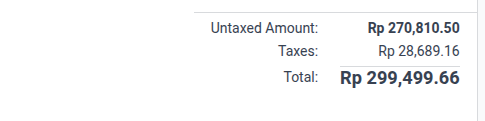

<div class="section" style="text-align: center; margin-bottom: 30px;">
    <h2>Video Demo</h2>
    <video autoplay loop muted playsinline style="width: 100%; max-width: 900px; border-radius: 8px; box-shadow: 0 4px 15px rgba(0,0,0,0.15);">
        <source src="video_demo.webm" type="video/webm">
    </video>
</div>
<div class="section">
    <h2>Before Debug</h2>
    
</div>
<div class="section">
    <h2>After Debug</h2>
    
</div>
